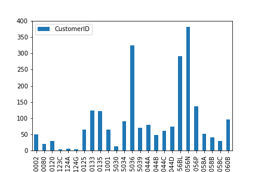

Recommender¶
Plan¶
Wie können wir die Social Media Ads personalisieren?
Auf Social Media (z.B. in der Instagram Story oder im Facebook Feed) werden aktuell zufällig Produkte als Werbung ausgespielt. Diese Ads sollen personalisiert werden, um deren Performance zu verbessern und den Umsatz durch die Social Media Ads zu steigern.
Die Herausforderung ist hierbei, dass Nutzer, die die Werbung sehen, teilweise noch keine aktuellen Kunden sind und auch nicht jeder Kunde identifiziert werden kann. Deswegen müssen verschiedene Recommender erstellt werden, die sich dann automatisch umstellen.
import pandas as pd
import numpy as np
Data¶
Die Recommender basieren auf dem bereits vorbereiteten Clustering-Datensatz. Darin sind nicht nur Kunden- und Bestellinformationen, sondern auch alle Produkte enthalten. Da der Datensatz durch die Kundensegmentierung bereits bekannt war, war der Aufwand für die explorative Datenanalyse geringer. Je nach Recommender, wurden die Daten unterschiedlich aufbereitet.
Der vollständigen Code befindet sich hier.
df = pd.read_csv('../Recommender_Marketing.csv', delimiter=',', encoding = 'unicode_escape')
df.head()
| CustomerID | InvoiceNo | StockCode | Description | Quantity | InvoiceDate | UnitPrice | Country | TotalSum | Cluster | |
|---|---|---|---|---|---|---|---|---|---|---|
| 0 | 12346 | 541431 | 23166 | MEDIUM CERAMIC TOP STORAGE JAR | 74215 | 2011-01-18 10:01:00 | 1.04 | United Kingdom | 77183.6 | NaN |
| 1 | 12347 | 537626 | 85116 | BLACK CANDELABRA T-LIGHT HOLDER | 12 | 2010-12-07 14:57:00 | 2.10 | Iceland | 25.2 | 2.0 |
| 2 | 12347 | 537626 | 22375 | AIRLINE BAG VINTAGE JET SET BROWN | 4 | 2010-12-07 14:57:00 | 4.25 | Iceland | 17.0 | 2.0 |
| 3 | 12347 | 537626 | 71477 | COLOUR GLASS. STAR T-LIGHT HOLDER | 12 | 2010-12-07 14:57:00 | 3.25 | Iceland | 39.0 | 2.0 |
| 4 | 12347 | 537626 | 22492 | MINI PAINT SET VINTAGE | 36 | 2010-12-07 14:57:00 | 0.65 | Iceland | 23.4 | 2.0 |
print("Total number of orders:", len(np.unique(df['InvoiceNo'])))
print("Total number of users:", len(np.unique(df['CustomerID'])))
print("Total number of products:", len(np.unique(df['StockCode'])))
Total number of orders: 18532
Total number of users: 4338
Total number of products: 3665
Model¶
Abhängig davon, ob ein Kunde identifiziert werden kann und ob wir bereits Informationen über ihn gesammelt haben, werden drei verschiedene Recommender entwickelt.
Recommender 1: Beliebteste Produkte (Unbekannter Nutzer, keine Kaufhistorie)
Recommender 2: Content-based filtering (Bekannter Nutzer, keine Kaufhistorie/nur Views)
Recommender 3: Collaborative filtering (Bekannter Nutzer, Kaufhistorie)
Recommender 1: Top 25 der beliebtesten Produkte¶
Dieser Recommender hat den geringsten Personalisierungsgrad. Dennoch ist es ein Fortschritt im Vergleich zu einer zufälligen Produktauswahl. Die Produkte werden basierend auf ihrem Absatz geordnet und die 25 besten Produkte werden dem Kunden angeboten.

Recommender 2: Content-based Filtering¶
Ziel dieses Recommender Systems ist es, einem Kunden, der bereits auf unsere Anzeigen reagiert hat, ähnliche Produkte zu dem von ihm angesehenen Produkt anzuzeigen. Dafür nutzen wir Content-based Filtering, d.h. wir vergleichen die Beschreibung der Produkte und finden Ähnlichkeiten.
Dafür nutzen wir eine Tfidf-Matrix. Diese teilt die Beschreibung jedes Produkts in einzelne Wörter und gewichtet die Tokens abhängig von ihrer Frequenz. So kann jedes Produkt mit allen anderen verglichen und jeweils ein Score ermittelt werden, wie ähnlich die beiden Produkte sind. Abschließend werden die Produkte in absteigender Score-Reihenfolge geordnet und die Produkte mit dem höchsten Score können als Ad ausgespielt werden.
Die Herausforderung war hierbei, dass die Produktbeschreibungen auch Satzzeichen enthielten und Synonyme verwendeten.
Recommender 3: Collaborative Filtering¶
Dieser Recommender hat den höchsten Personalisierungsgrad, da wir den Kunden identifizieren und seiner Bestellhistorie zuordnen können. Hier wenden wir somit Collaborative Filtering an. Der Kunde wird bei diesem Recommender mit allen Nutzern verglichen. Nutzer, die in der Vergangenheit ähnliche Produkte gekauft haben, wie der betrachtete Kunde, werden als ähnlicher eingestuft als Nutzer mit einer anderen Bestellhistorie.
Basierend darauf werden dem Kunde dann Produkte angezeigt, die diese ähnlichen Nutzer gekauft haben. Hier spielt neben der Kunden- und Product-ID auch die Bestellmenge eine Rolle, die Aufschluss darüber gibt, wie gut einem Kunden das Produkt gefällt. Nach einer Feature Reduction kann wiederum eine Korrelationsmatrix ermittelt und ein Ähnlichkeitsscore definiert werden. Anhand dessen können wieder die Produkte mit dem höchsten Score als Ad ausgespielt werden.
Evaluation¶
Der Aufbau der Recommender erfolgt exemplarisch auf Basis eines statischen Datensatzes. Damit die Recommender erfolgreich sind, ist es wichtig, diese an die aktuelle Datenquelle anzubinden. Da sich Kundeninteressen und das Sortiment stetig verändern, ist es wichtig, die Recommender nicht auf einer statischen Datenbasis zu betreiben.
Auch wenn Recommender 3 den höchsten Personalisierungsgrad hat, bieten Recommender 1 und 2 eine gute Fallbacklösung. Deswegen ist das Zusammenspiel der Recommender besonders wichtig. Abhängig davon, welche Informationen über einen Nutzer vorliegen, muss beim Deployment entschieden werden, welcher Recommender genutzt wird.